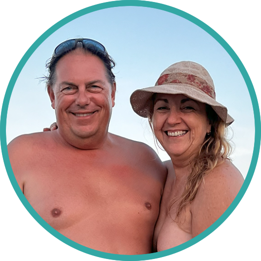

Guia sensorial 2026
No es nomes una guia. Es una manera de sentir la Costa Brava amb el cos i el paisatge.
Hi ha llocs que no es recorden per una dada ni per una coordenada, sino per l'olor de pi, per la pedra calenta sota els peus, per aquell silenci just abans d'entrar a l'aigua. Aquesta portada vol comencar aqui.
No venim a comptar platges. Venim a obrir portes a racons que canvien el ritme, afluixen la mirada i tornen el cos al centre.
Cales on la nuesa no es un reclam, sino una forma natural d'estar. Llocs on el trajecte també forma part de l'experiència.
- 27llocs per sentir, no nomes visitar
- 3comarques que canvien de to a cada tram
- 1fil conductor: llibertat, paisatge i respecte
Filosofia
Aquesta home no vol vendre una costa. Vol convidar-te a una manera mes lliure i mes sensible de viure-la.
No venim a acumular llocs ni a convertir la costa en una successio de punts sobre un mapa. Venim a escoltar quins paisatges t'obren, quins silencis et calmen i quines cales t'ajuden a tornar a una presencia mes honesta.
Les dades serveixen, pero no son el centre. El centre es el que passa dins teu quan el cami s'acaba, la roca s'obre i el primer bany t'abaixa el soroll. Aixo es el que volem preservar: una relacio mes lenta, mes lliure i mes encarnada amb el territori.
La guia neix del respecte pel lloc, pel cos i per una experiencia que no es consumeix: s'habita, es respira i es recorda. Per aixo no ens interessa una mirada turistica. Ens interessa el vincle.
No ven, convida.
No informa nomes, transforma.
No es turistica, es experiencial.
Troba el teu to
Busca no nomes per zona, sino per la manera com et vols sentir
Mapa emocional
Un litoral per llegir amb el cos, el paisatge i la intuicio
Cada marcador es una promesa de ritme, textura i atmosfera
Seleccio editorial
Quatre portes d'entrada a quatre maneres diferents de viure el mar
Experiencies
Quan el directori es converteix en vivencia compartida
Rutes guiades, escapades i espais per baixar del cap al cos
Senderisme i tours guiats amb esperit naturista
Sortides pensades per llegir el territori caminant: cales, camins, miradors i rutes on la connexio amb la natura passa davant del ritme productiu.
Veure tours i rutesMassatges i tallers per tornar al cos
Experiencies orientades a la presencia, la intimitat i el benestar: massatges, tallers i espais on la calma no es concepta, es practica.
Descobrir experiènciesHi ha cales on el primer bany sembla una tornada. No a un lloc concret, sino a una manera mes lenta, mes lliure i mes honesta d'estar al món.
Respecte i convivencia
Aquesta guia vol recordar que cada cala te un to propi. Llegir-lo, respectar-lo i ocupar-lo amb delicadesa forma part de l'experiencia.
Acces i transicio
Caminar, baixar escales, travessar un pinar o sentir el vent abans del mar no son molesties: sovint son el llindar emocional del lloc.
Escollir be el dia
No totes les cales demanen el mateix. N'hi ha de llum neta, n'hi ha de silenci, n'hi ha de roca calenta i tarda lenta. Aquesta guia vol ajudar-te a notar la diferencia.
Blog
Relats, idees i fragments per allargar l'experiencia mes enlla del mapa
Com canvia una cala segons l'hora, la llum i el cansament amb que hi arribes
Textos breus, sensorials i útils per explicar no només on anar, sinó com canvia el lloc segons el moment.
Per què hi ha llocs on la nuesa sembla una forma natural d'entrar al paisatge
Reflexions sobre cos, llibertat, respecte i la manera com la Costa Brava pot acollir experiències molt diferents sense perdre autenticitat.
Acces, sensacions, descobertes i notes de territori
Una capa editorial per mantenir el projecte viu, amb recorreguts personals, recomanacions i noves peces narratives.
FAQ
Preguntes frequents
Les platges son exclusivament nudistes?
No sempre. Algunes tenen tradicio naturista molt clara i d'altres son mixtes. A cada fitxa cal indicar-ho amb la maxima precisio possible.
La informacio d'acces es definitiva?
La base actual esta pensada com a directori editorial. Es recomanable revisar accessos, aparcament i condicions locals abans de sortir.
Puc deixar comentaris sobre una platja?
Si. Cada fitxa te un espai de comentaris. En aquesta versio estatica, els comentaris es guarden al teu navegador.
Afegireu mes dades a cada fitxa?
Si, la idea es ampliar amb coordenades, serveis, dificultat d'acces, estat del terreny i recomanacions de visita.

Pareja fundadora de Costa Brava Nude Guide, Free Hiking i AC Explora.
Qui som
Una parella arrelada a la Costa Brava que entén el territori com a experiència, no com a producte
Som una parella que viu a la zona de la Costa Brava i que coneix el territori des de dins. Ens agrada explorar cales, camins, pobles i racons naturals, i compartir-los amb una mirada propera, respectuosa i practica.
A traves de Free Hiking, AC Explora i altres projectes vinculats, organitzem viatges, rutes i experiencies per a persones que volen connectar amb la natura, el territori i una manera mes lliure de viure el cos.
Promovem el nudisme, l'acceptacio corporal i les experiencies amb sentit: senderisme, escapades, viatges d'autor i activitats pensades per descobrir la Costa Brava i altres destinacions des d'una perspectiva conscient.
30fitxes actives
3comarques cobertes
1criteri editorial propi
Com treballem
- Coneixement directe del territori, les rutes i l'entorn natural de la Costa Brava.
- Especialitzacio en viatges per a la comunitat nudista, senderisme nudista i activitats outdoor amb enfocament respectuos.
- Projectes connectats amb viatges d'autor, e-bike, senderisme, massatge i tallers per a parelles.